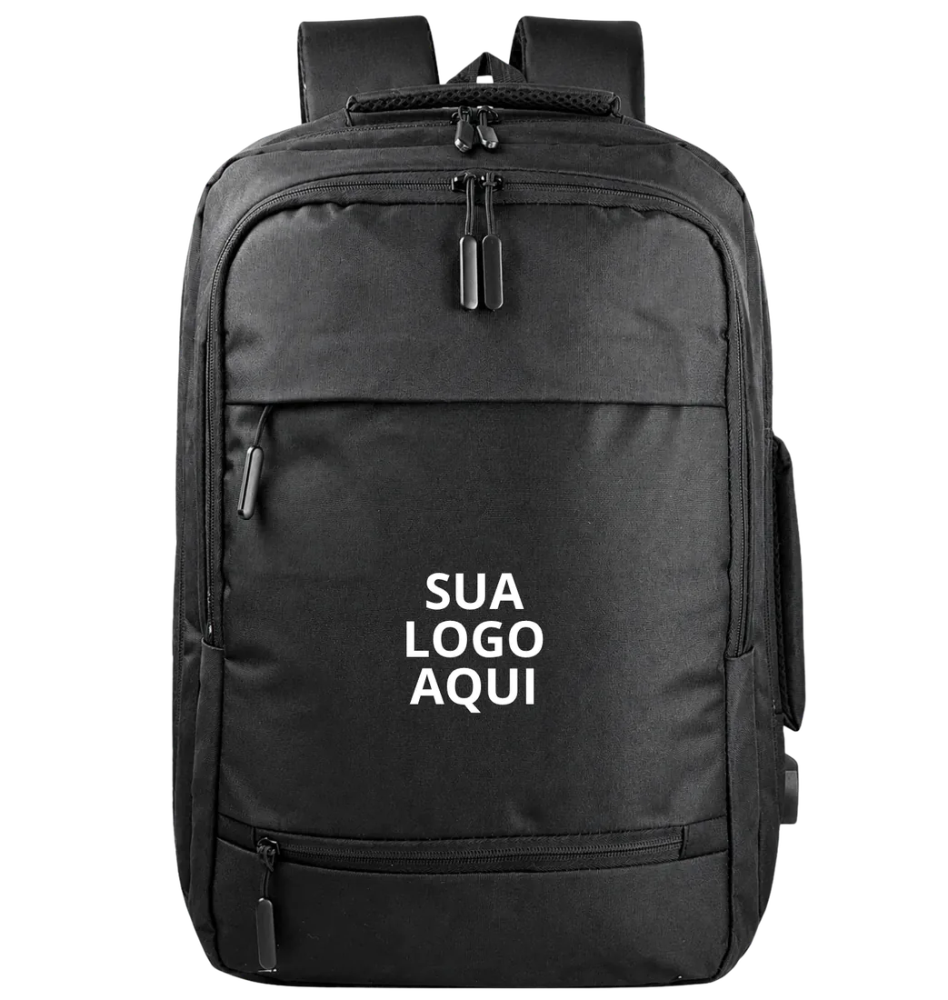

Muita marca nova define o preço da bolsa olhando a concorrência ou multiplicando o custo de fábrica por dois. As duas formas costumam dar errado: a primeira ignora os custos próprios, a segunda esquece impostos, taxas e despesas fixas. Este post mostra um roteiro simples de formação de preço, com um exemplo numérico, para quem vai vender bolsas e mochilas com marca própria.
Comece pelo custo completo da peça
O custo de fábrica é só a primeira linha. Para chegar ao custo da peça pronta para vender, some:
- Preço de produção por unidade: o valor cobrado pelo fabricante, com tecido, aviamentos, mão de obra e personalização;
- Desenvolvimento rateado: a peça piloto e a modelagem. Na LS Confecções, o desenvolvimento custa em média R$ 600, variando conforme o modelo. Divida esse valor pelas peças do primeiro lote;
- Frete de entrada: transporte da fábrica até o seu estoque;
- Embalagem e etiquetas: saco, tag, cartão, caixa de envio;
- Fotos e amostras: peças usadas em ensaio e conteúdo também são custo.
Se você ainda não sabe o custo de produção, o post quanto custa fabricar uma mochila personalizada mostra o que pesa no preço de fábrica.
Para ter o custo de fábrica real, peça orçamento de bolsas personalizadas direto com a LS Confecções.
Separe custos variáveis e despesas fixas
Custos variáveis acompanham cada venda: impostos sobre o faturamento, comissão de vendedor, taxa do marketplace, taxa do cartão ou do gateway de pagamento. Despesas fixas existem mesmo sem vender: aluguel, contador, ferramentas, salário, anúncios mensais. O Sebrae recomenda transformar as despesas fixas em percentual do faturamento previsto para incluí-las no cálculo do preço (fonte 1).
O que é markup
Markup é um índice aplicado sobre o custo para chegar ao preço de venda. Segundo o material do Sebrae, o índice cobre os custos variáveis, as despesas fixas e o lucro desejado, todos em percentual do preço (fontes 1 e 2). A fórmula do markup multiplicador é:
Markup = 100 ÷ (100 − soma dos percentuais de impostos, taxas, despesas fixas e lucro)
Preço de venda = custo da peça × markup
O próprio Sebrae alerta para não formar preço só dobrando ou triplicando o custo, porque esse multiplicador não tem relação com a estrutura de cada negócio (fonte 1).
Exemplo numérico (ilustrativo)
Os números abaixo são um exemplo para mostrar o cálculo. Não são preços da LS Confecções nem alíquotas aplicáveis à sua empresa. Imagine uma mochila com custo completo de R$ 80,00 por unidade, vendida em loja virtual própria:
| Item | Percentual sobre o preço |
|---|---|
| Impostos sobre a venda (exemplo) | 8% |
| Taxas de pagamento e plataforma | 7% |
| Frete subsidiado e marketing por venda | 8% |
| Despesas fixas rateadas | 15% |
| Lucro desejado | 15% |
| Total | 53% |
Markup = 100 ÷ (100 − 53) = 100 ÷ 47 = 2,13. Preço de venda = R$ 80,00 × 2,13 = R$ 170,40, que você pode arredondar para R$ 169,90 ou R$ 179,90 conforme a estratégia. Conferindo: em R$ 170,40, 53% (R$ 90,31) vão para impostos, taxas, despesas e lucro, e 47% (R$ 80,09) cobrem o custo da peça.
Markup não é margem
No exemplo, o markup é 2,13, mas a margem de lucro é 15% do preço. Confundir os dois é comum. Markup é sobre o custo; margem é sobre o preço de venda. Quando alguém diz que trabalha com "100% de markup", quer dizer que vende pelo dobro do custo, e isso pode resultar em margem líquida baixa ou até negativa depois de impostos e taxas.
O canal de venda muda o preço
A mesma bolsa tem estruturas de custo diferentes em cada canal:
- Loja virtual própria: taxa de pagamento menor, mas você paga tráfego e frete;
- Marketplace: comissão por venda mais alta, que entra na soma de percentuais;
- Atacado para lojistas: o lojista também aplica o markup dele. Seu preço de atacado precisa deixar espaço para o preço final continuar competitivo;
- Venda corporativa: volume maior, prazo de pagamento mais longo e negociação de preço.
Faça uma conta para cada canal. Se o preço de marketplace ficar alto demais, uma saída é vender um modelo mais simples nesse canal.
Impostos: fale com o contador
A carga tributária depende do regime da empresa (MEI, Simples Nacional, Lucro Presumido ou Real), da atividade e do estado. Por isso o exemplo usa um percentual fictício. Antes de publicar preço, peça ao seu contador o percentual efetivo sobre a venda de produtos.
Valide com o mercado
O cálculo dá o preço mínimo saudável. Depois, compare com marcas de posicionamento parecido. Se o seu preço ficar muito acima, revise o produto (tecido, aviamentos, acabamento) ou a estrutura de custos. Se ficar abaixo, você pode ter espaço para margem maior ou para investir em marca. Para simular cenários, use a calculadora de preço para marcas. Se você está começando, leia também como criar uma marca de bolsas e entenda o modelo de private label, em que você vende com a sua marca um produto fabricado por nós.
Erros comuns na precificação
- Esquecer o frete grátis: se a loja oferece frete grátis, o custo médio do envio entra nos percentuais;
- Ignorar trocas e devoluções: reserve um percentual para peças devolvidas ou com defeito de transporte;
- Dar desconto sem refazer a conta: um desconto de 15% no exemplo acima elimina todo o lucro previsto;
- Usar o mesmo preço em todos os canais: cada canal tem a sua estrutura de taxas.
Quantidade mínima e custo unitário
O preço de produção cai com o volume, mas estoque parado também custa. Com pedido mínimo de 20 peças por modelo e cor, dá para testar cores e modelos antes de investir em lotes grandes e ajustar o preço com dados reais de venda.
Perguntas frequentes
Qual a diferença entre markup e margem de lucro?
Markup é o índice aplicado sobre o custo para chegar ao preço. Margem é o percentual do preço de venda que sobra como lucro. Um markup de 2,13 pode corresponder a uma margem de 15%, dependendo dos impostos e despesas.
Posso simplesmente dobrar o custo de fábrica?
Não é recomendado. O Sebrae alerta que dobrar ou triplicar o custo ignora impostos, taxas e despesas fixas de cada negócio. Monte o markup com os percentuais reais da sua empresa.
Como incluir o custo da amostra no preço?
Divida o valor do desenvolvimento pelo número de peças do primeiro lote e some ao custo unitário. Na LS Confecções, o desenvolvimento custa em média R$ 600, variando conforme o modelo.
Fontes
- Saiba como fazer seu preço de venda (e-book), Sebrae.
- Preço de venda: como calcular, Sebrae/PR.
- Você sabe calcular o valor de venda de seus produtos ou serviços?, Sebrae/PR.
Precisa do custo de produção para fechar o preço?
Passamos o custo por peça com base no seu modelo, tecido e quantidade, a partir de 20 peças por modelo e cor. Fale com o comercial e monte a conta com números reais.
Solicitar orçamento